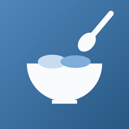
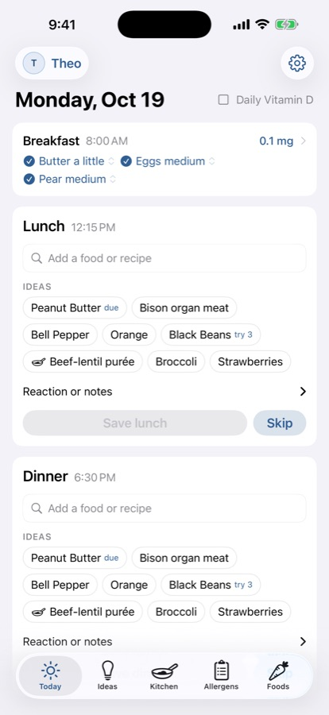
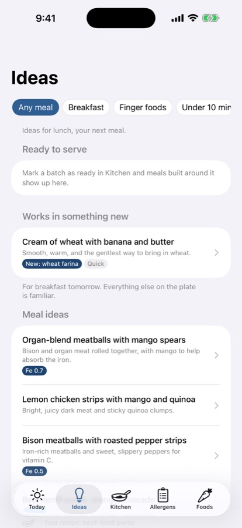
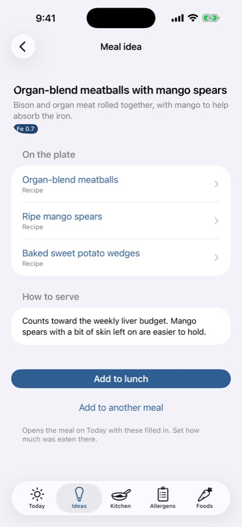
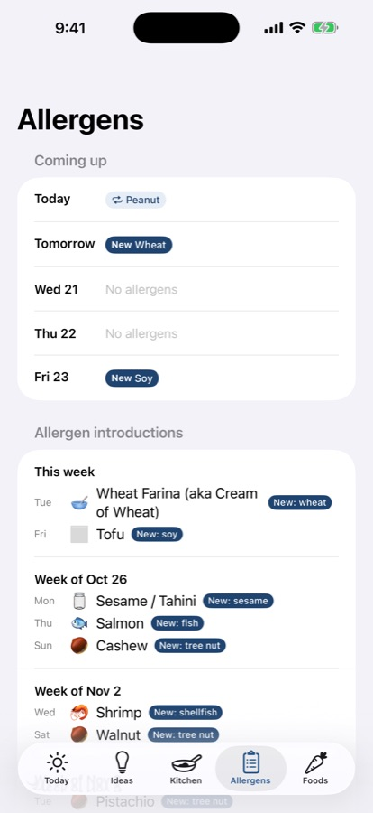
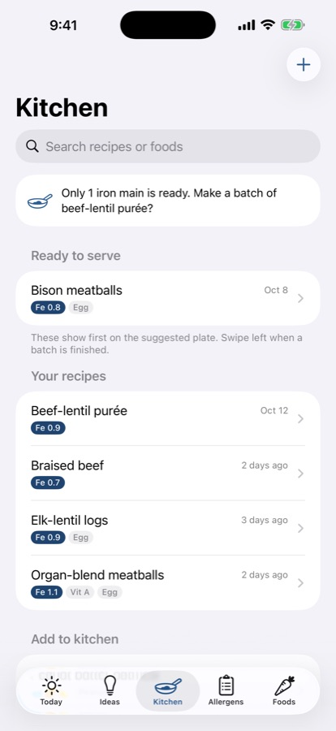
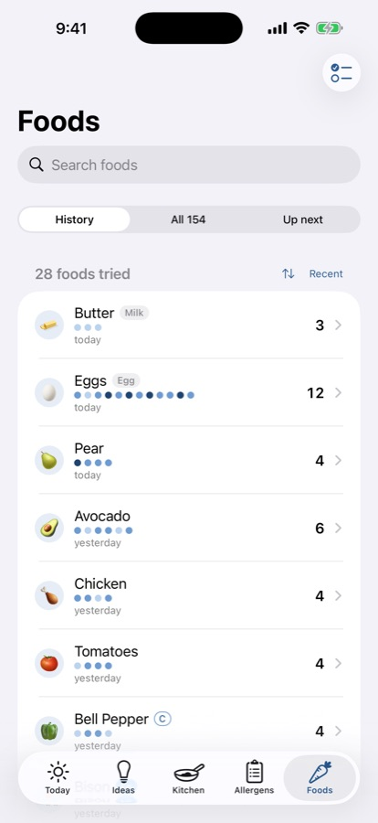

First BitesA free iPhone app that keeps track of what your baby's eaten, which allergens are next, and roughly how much iron they got today. It also gives you actual meal ideas when you're out of them.

Why I made this. I didn't love any of the existing apps out there, even the most popular ones. As a family, we sometimes default to what's available and what's easiest, but I still wanted to make sure my little one was trying a wide variety of foods, getting allergens in on time, and getting enough iron and vitamin D.
I wanted simple meal and recipe ideas without an overbearing "meal plan." And I wanted to keep track of all the batches we'd made, frozen, and promptly forgotten the ingredients of.
I hope you find it helpful.
Tap what they ate and whether it was a little, medium or a lot. Forgot yesterday's dinner? Flip back a day and fill it in.
A clear schedule for the nine common allergens, with each tree nut on its own day. Once something's in, it reminds you to keep it in the rotation.
A rough daily iron total with a gentle target that adjusts for breast milk, formula or both. Vitamin C pairing and liver limits are handled quietly in the background.
Salmon cakes with lemony yogurt dip. Banana egg pancakes. Cumin lamb meatballs. Dozens of named dishes, each with how to serve it, and new foods flagged.
Save your batch recipes (or start from 60+ included ones), mark what's in the fridge, and get meals built around what's ready.
Invite a partner, grandparent or nanny through iCloud. Everyone logs in the same place, and it works for more than one kid.
Swipe through the main screens.





It's free. No subscription and no ads.
For now, yes. It works on iPhones running iOS 17 or later.
Both. Meal ideas are tagged for finger foods, and spoon foods are in there too.
It stays on your phone and in your own iCloud, shared only with people you invite. No accounts, no tracking, nothing sent to us. Privacy policy.
No. It's a tracking and planning helper based on published feeding guidance. Your pediatrician knows your baby best, especially around allergies, iron and supplements.
It's with Apple for review right now. Send a quick email and I'll let you know the day it's live.
Email me when it's out